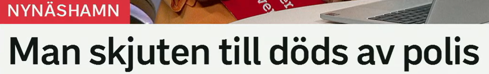
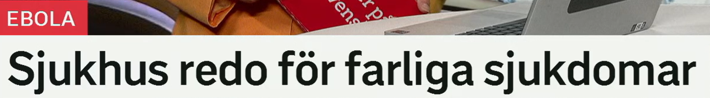

Man skjuten till döds av polis
一名男子被警方开枪击毙。
en man 男子、男人。新闻中常用 man 表示身份未完全公开的男性。
相关词：person 人，misstänkt 嫌疑人，offer 受害者，gärningsman 作案者。
En man greps av polisen. 一名男子被警方逮捕。
来自动词 skjuta 开枪、射击；skjuten = 被枪击的。
相关表达：beskjuten 遭射击，träffad av skott 被子弹击中，skadad 受伤。
Mannen hittades skjuten. 该男子被发现遭枪击。
till döds 表示“致死”。常见：skjuten till döds 被枪击致死，misshandlad till döds 被殴打致死。
Han sköts till döds i natt. 他夜间被枪杀。
av 在被动句中表示“由……”。polis 可指警察个体，也可泛指警方。
Bilen stoppades av polis. 车被警方拦下。
被动标题
X skjuten till döds av Y = X 被 Y 枪击致死。完整句可说：En man har skjutits till döds av polis.
SD-politiker misstänkt för brott
一名 SD 政治人物涉嫌犯罪。
en politiker 政治人物。复数同形可为 politiker。
相关词：ledamot 议员/成员，partiledare 党魁，minister 部长，kandidat 候选人。
Flera politiker kritiserar beslutet. 多名政治人物批评该决定。
misstänkt 可疑的/涉嫌的；misstänkt för brott = 涉嫌犯罪。
相关表达：anklagad för 被指控，åtalad för 被起诉，utreds för 因……被调查。
Mannen är misstänkt för stöld. 该男子涉嫌盗窃。
ett brott 犯罪、罪行。复数也常是 brott。动词 begå brott 犯罪。
相关词：stöld 盗窃，rån 抢劫，bedrägeri 诈骗，misshandel 殴打。
Polisen utreder ett allvarligt brott. 警方调查一起严重犯罪。
犯罪报道句型
Person misstänkt för brott 标题省略了 är。完整句：En SD-politiker är misstänkt för brott.

Sjukhus redo för farliga sjukdomar
医院已准备好应对危险疾病。
ett sjukhus 医院；复数也常是 sjukhus。
相关词：vårdcentral 医疗中心，akutmottagning 急诊，klinik 诊所/科室。
Sjukhuset tar emot fler patienter. 医院接收更多病人。
redo 准备好的；redo för X = 为 X 做好准备。
近义表达：förberedd för 为……准备好，beredd på 准备应对，klar för 准备就绪。
Staden är redo för stormen. 城市已准备好应对风暴。
farlig 危险的；复数 farliga。en sjukdom 疾病。
相关词：smittsam 传染性的，dödlig 致命的，allvarlig 严重的，utbrott 暴发。
Farliga sjukdomar kan spridas snabbt. 危险疾病可能迅速传播。
准备表达
X redo för Y = X 准备好应对 Y。标题常省略 är。
Nya attacker i natt
夜间发生新的袭击。
ny 新的；复数/定形 nya。搭配：nya regler 新规则，nya attacker 新袭击。
Nya uppgifter kom på morgonen. 早上出现了新信息。
en attack 袭击；复数 attacker。
近义词：angrepp 攻击，anfall 进攻，bombningar 轰炸，drönarattacker 无人机袭击。
Flera attacker rapporterades under natten. 夜间报告了多起袭击。
i natt 可表示昨夜/今夜，取决于说话时间。类似：i morse 今早，i går kväll 昨晚。
Det regnade kraftigt i natt. 夜里下了大雨。
省略发生
Nya attacker i natt 省略了 skedde 或 har skett：夜间发生了新的袭击。
Google bygger ett första datacenter
Google 建设首个数据中心。
原形 bygga，建造、建设。
近义词：uppföra 建造，anlägga 建设/修建，etablera 建立，investera i 投资于。
Företaget bygger en ny fabrik. 公司建设一座新工厂。
första 第一、首个。ett första datacenter 表示第一个/首个数据中心。
Det är företagets första kontor i Sverige. 这是公司在瑞典的第一个办公室。
ett datacenter 数据中心。相关词：serverhall 服务器机房，molntjänst 云服务，data 数据，energiförbrukning 能耗。
相关表达：serverpark 服务器园区，digital infrastruktur 数字基础设施，IT-anläggning IT 设施。
Datacentret kräver mycket el. 数据中心需要大量电力。
企业投资标题
Företag bygger X = 企业建设 X。若强调落地，可说：Google etablerar ett datacenter i Sverige.
复习表：重点词 + 近义词 + 高频用法
| 关键词 | 近义/相关词 | 高频搭配 |
|---|---|---|
| skjuten | beskjuten, träffad av skott, skadad | skjuten till döds, hittades skjuten |
| misstänkt | anklagad, åtalad, utreds för | misstänkt för brott, misstänkt person |
| redo | förberedd, beredd, klar | redo för, redo att hjälpa, beredd på |
| sjukdom | smitta, utbrott, infektion, epidemi | farliga sjukdomar, smittsamma sjukdomar |
| attack | angrepp, anfall, bombning, drönarattack | nya attacker, attack i natt, attack mot |
| bygga | uppföra, anlägga, etablera, investera i | bygga datacenter, bygga fabrik, etablera sig |
练习 1
把“一名男子被枪击致死”译成瑞典语。提示：En man sköts till döds.
练习 2
说“一名政治人物涉嫌犯罪”。提示：En politiker är misstänkt för brott.
练习 3
用 redo för 写“医院准备好应对疫情”。提示：Sjukhuset är redo för utbrottet.
练习 4
把“Google 在瑞典建设数据中心”译成瑞典语。提示：Google bygger ett datacenter i Sverige.